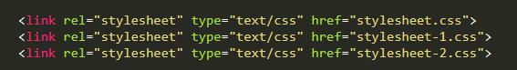

css specificity เป็น css rules ที่ html จะเลือกใช้ style ลงใน element นั้นๆ
/* stylesheet-1.css */
ul li {
display: inline-block;
list-style: none;
padding: 10px;
}
ul li a {
text-decoration: none;
color: red;
}
ul li.active {
background-color: red;
}
/* stylesheet-2.css */
ul li {
display: inline-block;
list-style: none;
padding: 10px;
}
ul li.active a {
color: green;
}
ul li a {
text-decoration: none;
color: red;
}
ul li.active {
background-color: transparent;
}
เมื่อมีการ link เข้ากับ stylesheet หลายอัน จะทำการนำผลที่เกิดล่าสุดมาแสดงผล.
code ใน css style 1 และ style 2
- เมื่อมีการ link เข้ากับ stylesheet หลายอัน ตามลำดับดังภาพ

จะได้ผลปรากฎว่า
จะเห็นได้ว่า stylesheet ที่ 1 มี สีพื้นหลัง TEST 1 ตัวอักษรสี แดง TEST 2 ตัวอักษรสีเขียว
แต่การทำงานจริงๆของมันคือ ทำ style 1 ก่อน ได้เป็น
แล้วจึงค่อยทำ stylesheet ที่ 2 ทับ จึงได้หน้าตาแบบนี้